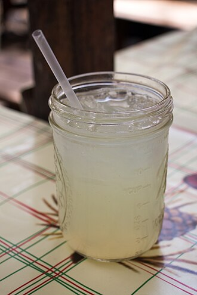

Lemonade

Lemonade is a sweetened lemon-flavored drink.
There are many varieties of lemonade found throughout the world.
Historically and in many parts of the world, lemonade refers to an un-carbonated beverage, traditionally homemade, using lemon juice, water, and a sweetener such as cane sugar, simple syrup, maple syrup or honey.[2] In other parts of the world, it is most commonly a reference to a carbonated lemon-flavoured soft drink or soda. Despite the differences between the drinks, each is known simply as "lemonade" in countries where it is dominant.
Ingredients:
- Sugar
- Water
- Lemon
- Ice
Recipe:
- Place the sugar and water in a small saucepan and bring to a simmer. Stir so that the sugar dissolves completely and remove from heat.
- While the water is heating for the simple syrup, juice your lemons. Depending on the size of the lemons, 4 to 6 of them should be enough for 1 cup of juice.
- Pour the juice and the simple syrup sugar water into a serving pitcher. Add 2 to 3 cups of cold water and taste. Add more water if you would like it to be more diluted (though note that when you add ice, it will melt and naturally dilute the lemonade).
If the lemonade is a little sweet for your taste, add a little more straight lemon juice to it.
- Refrigerate 30 to 40 minutes.
- Serve with ice and sliced lemons.